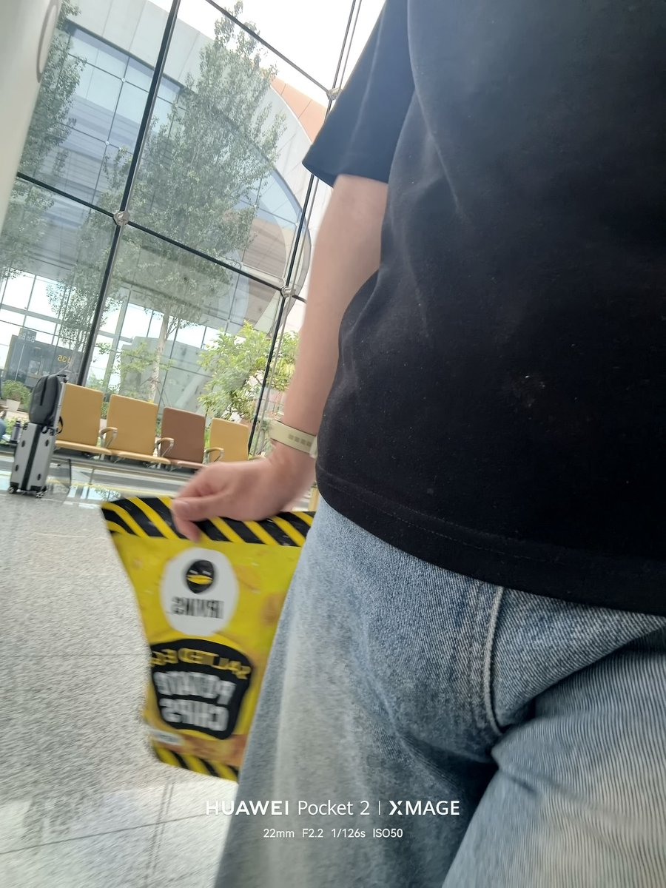

たたなこ
@tatanakots
@LemPackageMain1 女士！这是什么！👉

柠檬味的maiN包🍥（转生版）
@LemPackageMain1
草，大兴机场，过完安检以后，突然被一安检员拉住，指着我裆部问“女士，这是什么？”我当时整个人都懵了，还没来得及反应，她直接拿金属探测仪在我那里扫了一圈，扫完还上手捏了两下😰完事问我你是男生吗，我…🌚
有群u好奇啥样，我拍了张照片一看发现确实挺tm明显的🌚…以后不穿这么紧的裤子出门了🌚 https://t.co/YyT2tnkMkm